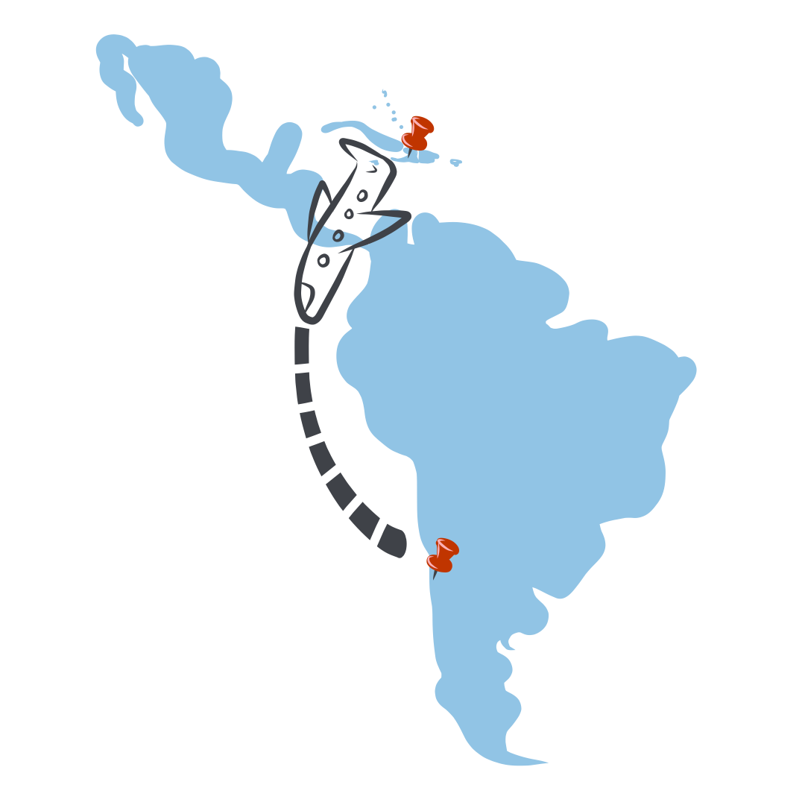
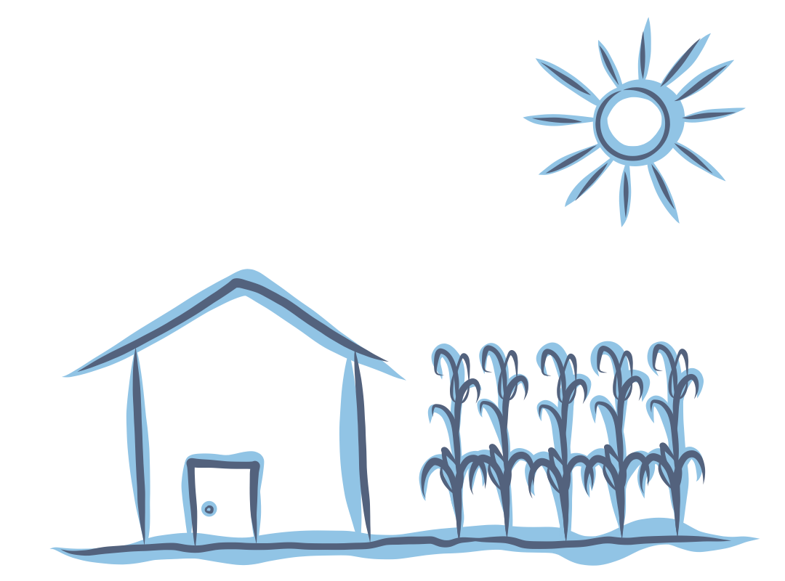

Leroi, junto a sus padres y cinco hermanos,
llegó hace dos semanas a Chile desde el puerto de Jacque, en Haití.
Su familia se dedicaba a la agricultura,
pero la erosión de los suelos y la crisis económica los obligó a viajar a Chile para poder tener una mejor calidad de vida.
Aunque en Haití su familia conversaba en CRÉOLE, una derivación caribeña del francés, desde que llegaron a Chile han intentado hacerlo sólo en español para poder aprender el idioma de manera más rápida.

